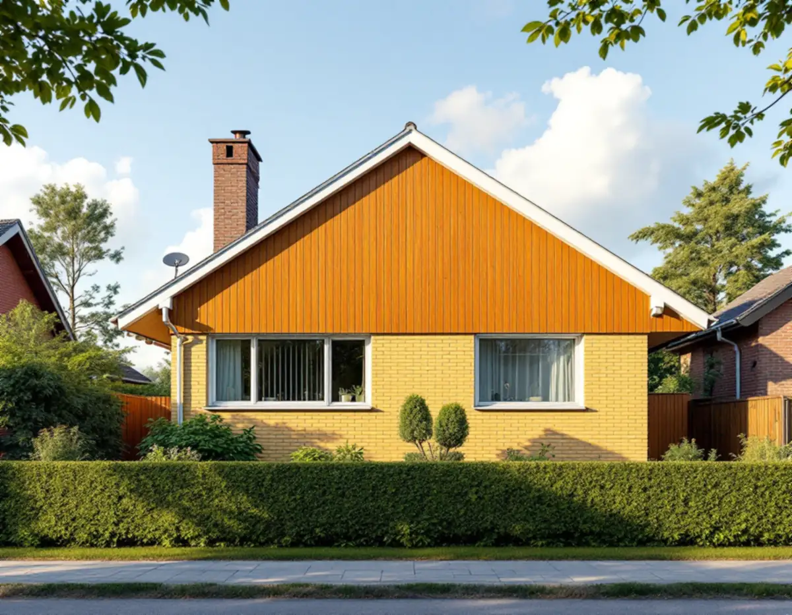
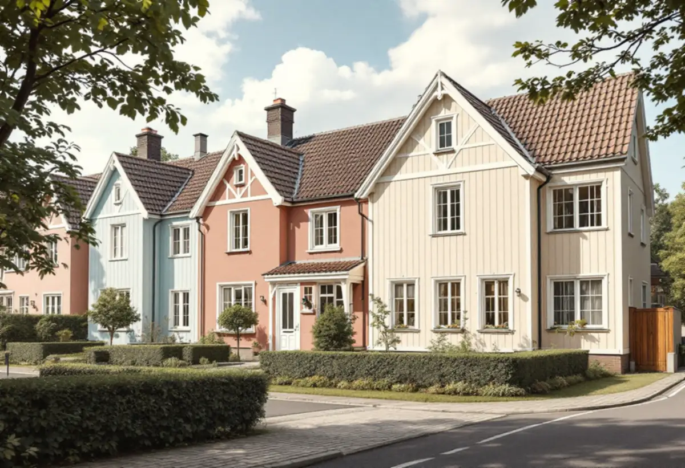
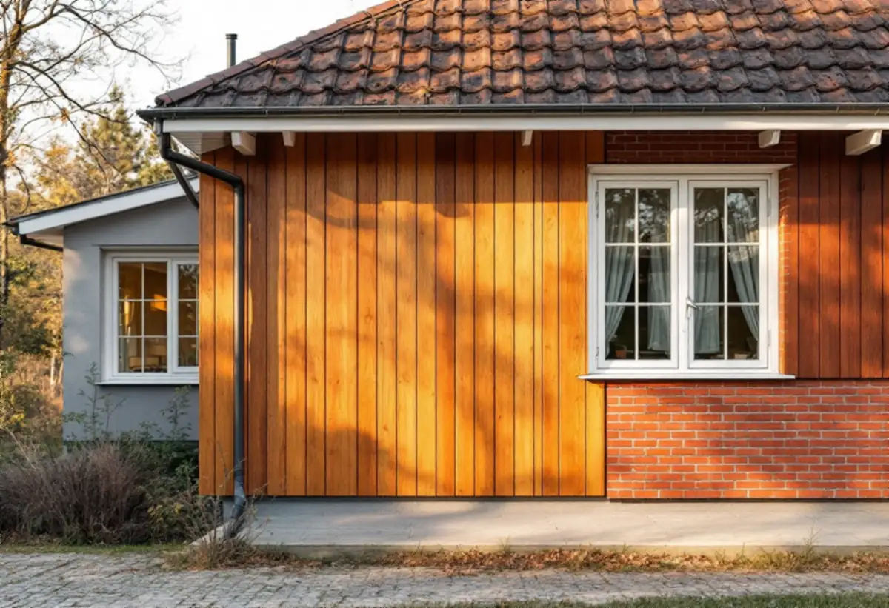

Platsbesök
Fasadmaterial, färgtyp och grannhusens kulörer går vi igenom.
Många småhus i Haninge byggdes mellan 1940- och 1980-talet, och kulören var en del av arkitekturen: mustiga färger på 1950-talet och ljusare pastell när 1980-talet kom. Geal Entreprenad AB målar om fasader på villor, kedjehus och radhus i Haninge och utgår från husets egen tid.

Haninges karaktärsmiljöer beskriver småhusområdena från 1940- till 1960-talet som samlade grupper av små, enhetliga villor, kedjehus eller radhus. 1940-talets hus är enkla en- eller tvåplansvillor i trä, puts eller fasadtegel, med enhetlig fönstersättning och färgsättning i ljusa eller mustiga kulörer.
På 1950-talet blev områdena mer individuellt utformade. Rött eller gult tegel kombinerades med grov spritputs eller trä målat i mustiga kulörer, men det finns också enkla fasader i puts eller trä utan knutar och foder. Exempel på sådana områden finns enligt kommunen i Handen, Jordbro, Vendelsö, Vendelsömalm och Västerhaninge.

Villorna från 1960-talet och framåt är oftast byggda i grupp, med enhetlighet inom området och små variationer mot gatan. Enligt kommunen varierar färgsättningen och fasadmaterialen kraftigt, men mustiga färger är vanliga, ofta tegel eller kalksandsten, så kallat mexitegel, i kombination med panel.
Mot 1980-talet blev variationen större inom områdena och husen fick åter dekorativa snickerier. Färgsättningen blev ljusare när pastellfärgerna slog igenom. Exempel på rekordårens småhus finns i Jordbro, Brandbergen, Västerhaninge och Handen.
För 1960–80-talens områden skriver kommunen att husens typiska fasadutformning när det gäller materialval och färgsättning ska värnas, och att mindre åtgärder som fasadändringar kan påverka ett helt kvarter. För 1940–60-talens hus beskriver kommunen dörrar och fönster som en bärande del av husets karaktär, där ursprunglig utformning och färgsättning ska värnas och vara utgångspunkt vid förändring.
Råden kan enligt kommunen tillämpas på alla småhusområden från perioden, även de som inte är utpekade som särskilt värdefulla. All bebyggelse omfattas dessutom av varsamhetskravet i plan- och bygglagen. En ny kulör i en husgrupp bör därför stämmas av mot grannhusen och mot vad gruppen hade från början.
Haninge kommun räknar byte av färg på fasaden som en fasadändring. Bygglov behövs om du ändrar fasaden på en byggnad eller i ett område som är särskilt värdefullt, och för andra byggnader än en- och tvåbostadshus inom detaljplan om fasaden vetter mot allmän plats. Målning i samma kulör räknas enligt Boverket normalt som underhåll.
Krävs lov ska ansökan innehålla en situationsplan på tomtkarta med byggnaden markerad, fotografier av byggnaden och ett förslag till kontrollplan. Vi hjälper till med underlaget. Om fasadmaterialen i kommunen kan du läsa under fasadrenovering i Haninge.
En fasad från 1950-talet har ofta flera material, och de målas olika. Trä skrapas och tvättas och grundas där färgen släppt, puts rengörs och lagas, och omålat tegel lämnar vi omålat. Kommunen påpekar för 1940–60-talens hus att en fasad i tegel inte ska putsas.
Vi skrapar fram äldre färglager på en liten yta för att se vad huset hade från början. Det hjälper både vid valet av färgtyp och när kulören ska stämmas av mot gruppen. Om kulörer och målning i Haninge i övrigt kan du läsa under målare i Haninge.

Fasadmaterial, färgtyp och grannhusens kulörer går vi igenom.
Äldre färglager tas fram för att se husets ursprungliga kulör.
Trä, puts och detaljer står var för sig.
Underlag till bygglov tas fram om huset ligger i ett värdefullt område.
Förarbete, grundning och strykning i rätt färgtyp.
Vi går igenom resultatet och skriver ner kulörerna.
Skatteverket räknar målning av fasader på ett småhus som rotarbete, liksom att montera och montera ner byggnadsställningen. Målning av staket och murar ger däremot inget avdrag.
Avdraget är högst 30 procent av arbetskostnaden, högst 50 000 kronor per person och år och högst 75 000 kronor tillsammans med rutavdrag. Färg, material och resor ger inget avdrag. Geal drar avdraget direkt på fakturan.
Fasadens yta, hur många material den har, underlagets skick, antalet snickerier och om bygglov behövs. En överblick finns under målare. Efter ett gratis platsbesök får du ett skriftligt kostnadsförslag.
Fasad, fönster och invändig målning.
Målare i Stockholm →Takbyte, takbesiktning och plåtarbeten.
Takläggare i Haninge →Dalarö, Vendelsö och Brandbergen.
Takrenovering i Haninge →Skjutfält, kulturmiljö och skärgårdstomter.
Attefallshus i Haninge →Vakuumtoalett, sluten tank och öarna.
Badrumsrenovering i Haninge →Nytt hus och tillbyggnad i omvandlingsområden.
Byggföretag i Haninge →Tegelvillor, grupphus och panelade gårdar.
Fasadrenovering i Haninge →Sportstugor och fönster i skärgårdsväder.
Fönsterbyte i Haninge →Gårdens fönster, från boningshus till ladugård.
Fönsterrenovering i Haninge →Egnahem, sportstugor och hus i sluttning.
Golvläggare i Haninge →Laga och slipa trägolvet i villan.
Golvslipning i Haninge →Egnahem, grupphus och Dalarö.
Köksrenovering i Haninge →Egnahem, grupphus och sommarvillor i Haninge.
Målare i Haninge →Falsad plåt, sjöbodar och beslag i Haninge.
Plåtslagare i Haninge →Verandor, altaner och skärmtak.
Snickare i Haninge →Kontrollplan och riskbedömning vid takbyte.
Takbyte i Haninge →Ny tapet och gamla lager i äldre villor.
Tapetsering i Haninge →Lov, situationsplan och kontrollplan.
Tillbyggnad i Haninge →Folkhemsvillan inifrån.
Totalrenovering i Haninge →